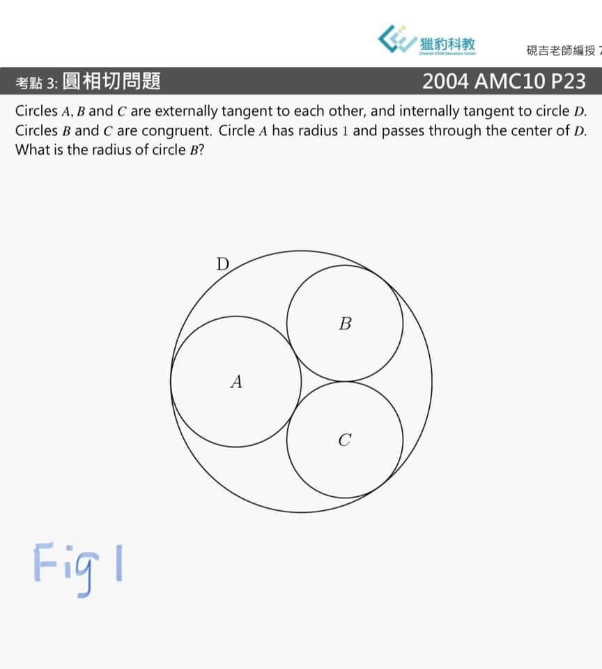
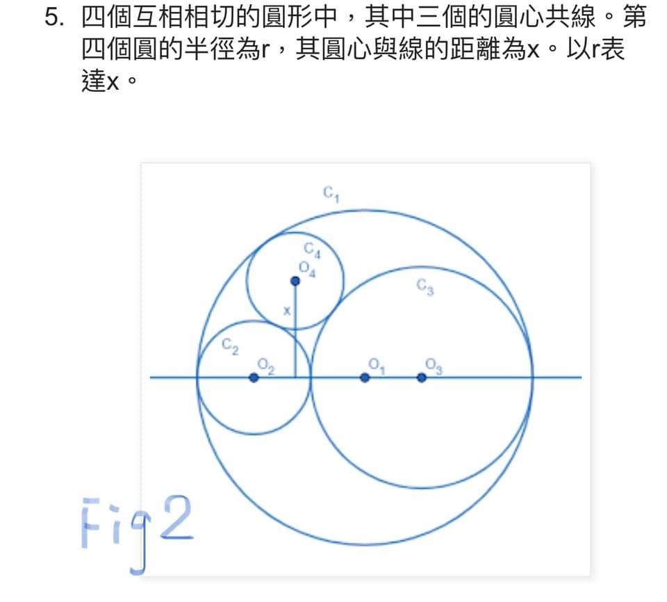
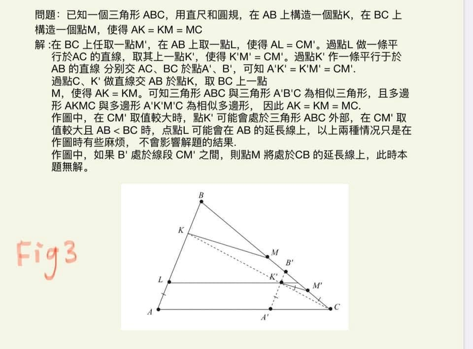

傳說中的猶太問題
前兩天獵豹老師的AMC網課有道題
（Fig1)
這題的圖形讓我聯想起
數學江湖中流傳已久的
所謂【棺材問題】
【Coffin Problems】
（關於蘇聯時期猶太學子的血淚史）
我摘了當年的一道幾何題 （Fig2)，各位看看跟獵豹老師題目的圖形是否頗神似
說說一段不太為世人所知的猶太辛酸史
焦元溥博士（歌手張懸的哥哥 ）是台灣知名的樂評人，他在採訪俄國學派的十二位鋼琴家時意外發現其中竟有十位是猶太裔！
這與人口比例是極大的反差，要知道在過去兩百年裡蘇聯境內的猶太人口佔比不到1%！
焦後來在文章中寫道：前蘇聯時代出了眾多音樂大師，技巧與音樂皆讓舉世嘆服。但深究其中，良好的教育固然重要，外人不見得能洞穿隱藏的真相卻是—在昔日那些無比榮耀顯赫的名字中，除了李希特與羅斯托波維奇以外幾乎全是猶太人！
無獨有偶，環顧當今世界數學研究超級大國 美、俄、法 ，雄踞各領域的大師巨匠 其中來自前蘇聯或承自俄國學派的猶太學者總是不成比例的高！
猶太人的聰慧傑出舉世皆知，猶太文化傳統和思想精髓鼓勵人們積極學習崇尚智慧。猶太人在人類幾乎所有領域都抒寫了極為光輝璀璨的歷史。
人口佔比不到世界百分之四，獲得諾貝爾獎的猶太人卻佔到總獲獎人數的四分之一左右！
信手捻來猶太民族的傑出人物多如繁星,光是百年來的科學巨星便族繁不及備載：諾伯特•維納、埃米 • 諾特、馮 • 諾依曼、韋伊、蓋爾芳德、佩雷爾曼 等大數學家;
愛因斯坦、玻爾、玻恩、奧本海默、費曼等超級物理學家...
但這種特異的現象除了文化傳統外，背後還有什麼不為人知的原因嗎？！
猶太裔的大天才
馮. 諾伊曼認為
在飽受迫害的漫長歷史淬煉下，猶太人時刻伴隨著極度的不安全感，讓他們深刻感覺到唯有做出超乎尋常的貢獻，否則就得面臨滅亡的威脅！
反猶運動在歐洲有千年以上歷史（複雜的原因 脈絡 此處不贅述）
近代反猶主義則源起自帝俄時期 ，
當時反猶主義甚至如國策一般的被奉行 ，後來這種思潮在歐洲逐漸蔓延激化，終於釀成世紀巨災！
然而即便滿手血腥的納粹在二戰中壽終正寢，但蘇聯社會直到瓦解前，反猶主義總似幽靈一般地若隱若現 。
在過去兩個世紀，蘇聯用法律與武力手段限制猶太人的居住地，除了少數的科學家、工程師、音樂家等專業人士，其餘都不准待在莫斯科。
上世紀五零年代起，著名的國立大學
莫斯科大學、聖彼得堡大學、列寧格勒大學、鮑曼工學院等著名大學或者是與航天航空、軍事技術、信息科學等有關的系科對猶太學生都採取了不公平的入學政策。
猶太孩子要想進入音樂學院學習，不是琴彈得比別人好就行 而是要好上幾倍才行！
正因如此，倒應了孟子所言：天將降大任於斯人也，必先苦其心志，勞其筋骨...這種惡劣的生存環境將不少蘇聯猶太人鍛造得異常堅韌、勇敢和剛毅，終使他們脫穎而出！
在當時的氛圍下，舉世聞名 人才輩出的莫斯科大學物理系與力學數學系在入學考試中對於猶太學生無盡刁難！
近年來越來越多的資料揭露了當年醜陋的黑暗面！
當年申請這些頂尖大學的孩子必須像古代中國科舉報名一樣地陳明三代，哪怕只有八分之一的猶太血統，都會在考試時遭受凌遲式的摧殘！
後來在麻省理工任教的猶太女數學家 Tanya Khovanova 當年身歷其境。她於1976 年獲得IMO金牌，是蘇聯有史以來第 2 位獲得這項賽事金牌的女性。
1975 年夏天，Tanya Khovanova 與 7 個隊友在一個蘇聯數學訓練營進行數學訓 練，準備代表蘇聯參加國際奧林匹克數學競賽 。
當時擔任教練的Valera Senderov 收集了一些「猶太問題」。在訓練期間，他拿出一些來讓這些隊員一試牛刀，並且希望用這些數學題目來進行訓練。當時這個蘇聯奧數代表隊可以說是由全蘇聯最富有數學天賦的 8 位學生組成的，但是在長達一個月的時間裡，這些孩子也只解決了一半的問題。當然，有一部分原因是他們並沒有把全部的時間都花費在這些問題之上，但是這也足以說明這些問題的難度之大！
（如今回首看這些問題 或許很多同學已經不覺得他們很難，但這是錯覺！因為這些題目早已透過各種形式流傳江湖，成為經典名題。而當年的學生可是沒有什麼參考書、補習班、網路教學的情況下，首次遭遇這些難題，而且這些專門用來「拷問」猶太學生的題目，還是用口試的方式限時回答！考試時，問題一個接一個，直到學生答不出來為止！）
在這種嚴苛的、針對性的刁難下，除了極少數的幸運兒，再傑出的猶太孩子也難通過考驗。解決世紀大難題「龐加萊猜想」且拒絕了費爾茲獎與千禧年大獎的佩雷爾曼，是因為在IMO中拿了滿分才獲准進入聖彼得堡大學。
當時，年紀尚輕的 Tanya Khovanova 的身心受到強大震撼，原來那時竟仍舊存在著對猶太人的如此的歧視對待！她後來努力地解決這些問題，並把這些問題當作人生中最寶貴的財富，至今仍完好地保存著記錄那些問題的藍綠色筆記本。
移民美國後，傑出的她取得了MIT的教職，
2011 年 10 月 15 日在 arXiv 網站與她的兒子 Alexey Radul 一起發表了一篇名為《猶太問題》的文章(Jewish Problems)其中精選了21 個「猶太問題」。
這些問題也就是後來所謂的「棺材問題」！
我摘錄其中一道題（Fig3）這題可提供打算考科學班的同學二階段的實作演練。
蘇聯對猶太菁英的壓迫，卻是送給美國的大禮，就像當年納粹送給美國一大票猶太科學大師一樣（愛因斯坦、馮諾曼...）
控制學大師諾伯特·維納、谷歌創辦人Sergey Brin
他們兩人的父親便是因此而來到了美國。
當年在逆境中掙扎、奮鬥不懈的猶太學子，最終在異國綻放了光芒，寫下輝煌的篇章！


